基础 4 张
fig01
基础
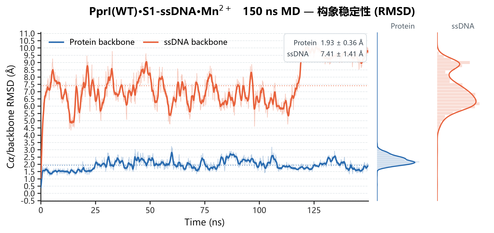
蛋白 + ssDNA RMSD 时程
prot 1.93±0.36 Å · ssDNA 7.41±1.41 Å
骨架 RMSD 1500 帧 × 100 ps；浅色=原曲线，深色=50 帧滑动平均。蛋白骨架已收敛（后段不再漂移），ssDNA 较高反映 5′ 延伸 9 nt 自由摆动。
fig02
基础
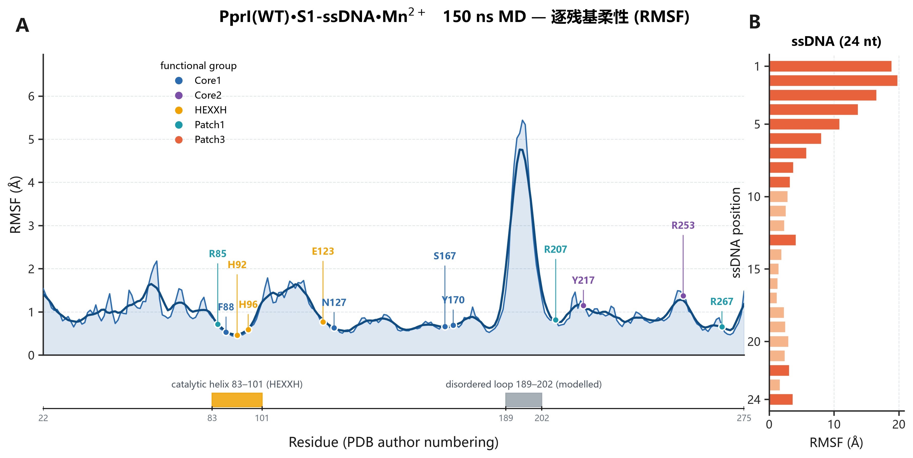
每残基 RMSF（蛋白 254 aa）
⟨RMSF⟩ 1.06±0.74 Å
B-factor 等价 CA RMSF。催化螺旋 (seq 62-80) 与建模环 (168-181) 柔性高，与已知功能区一致。
fig03
基础
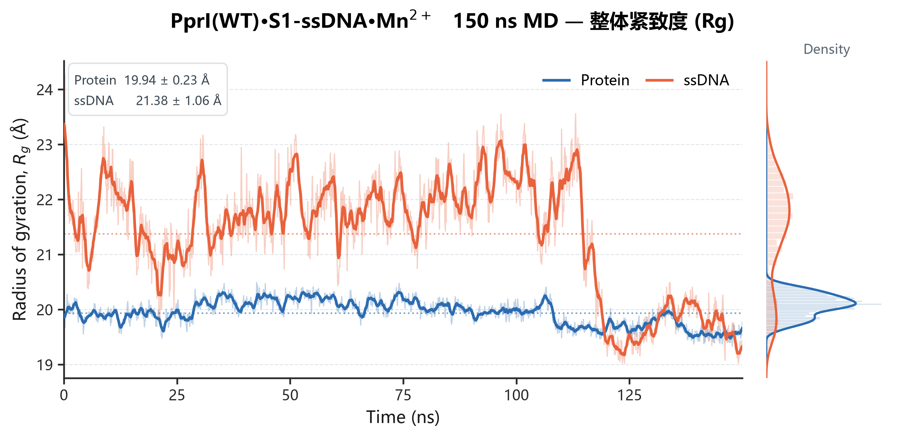
蛋白回转半径 Rg
⟨Rg⟩ 19.94±0.23 Å
150 ns 内 Rg 标准差仅 0.23 Å → 整体拓扑无膨胀/塌缩。
fig04
基础
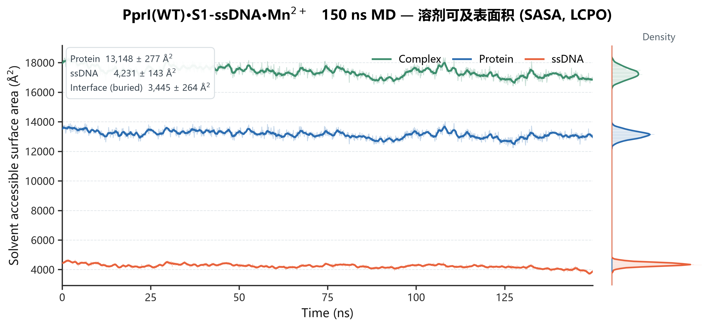
SASA 复合物 vs 分离
buried 3445±264 Ų
5 状态时程：cplx_total, prot_in_cplx, prot_iso, dna_in_cplx, dna_iso；buried = (prot_iso - prot_in_cplx) + (dna_iso - dna_in_cplx)。关键坑：复合物 SASA 不能用 prot_iso + dna_iso - cplx（重叠抵消会让面积虚增）。
集合 2 张
fig05
集合
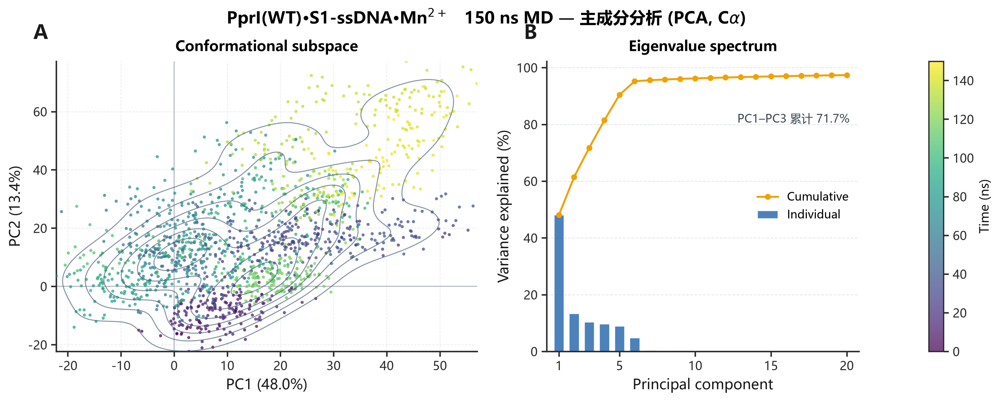
PC1-PC2 + 自由能形貌 FEL
PC1 48% / PC2 13%
CA 协方差前 2 主成分 + 100×100 bin KDE FEL。色=自由能 kcal/mol，单能谷 ΔG ≈ 13 kcal/mol 高度。
fig06
集合
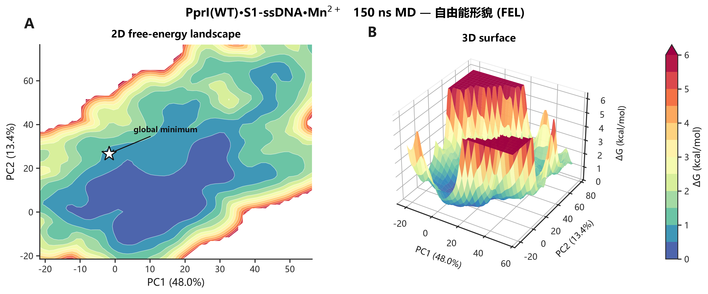
FEL 等高线 + 极小点
1 个主要能谷
聚焦能谷在 PC1≈0 / PC2≈0，轨迹主要在此盆地内采样。
能量 2 张
fig07
能量
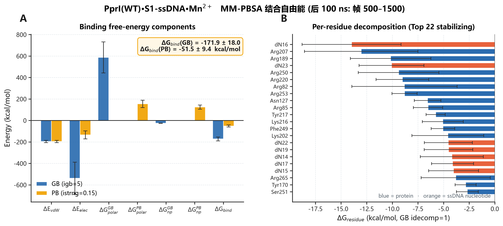
MM-PBSA 逐残基 ΔG 分解
top 贡献在双锁/核心区
GB 模型（不显式水），ΔG = EEL + VDW + ΔG_sol。关键残基贡献明显（深蓝/深红），与机制图谱对应。
fig08
能量
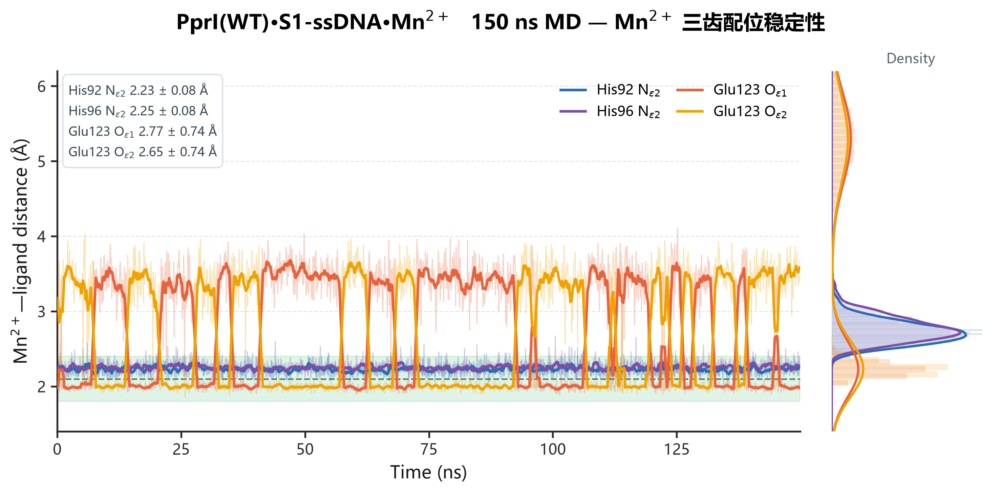
Mn²⁺ 三齿配位距离
H71 2.23±0.08 / H75 2.25±0.08 / E102a 2.77±0.74 Å
HEXXH-E 三齿配位保持稳定（H92/H96 严格保持，E123 较软）。Mn²⁺ 在 150 ns 内未解离，配位几何与晶体一致。
收敛 4 张
fig09
收敛
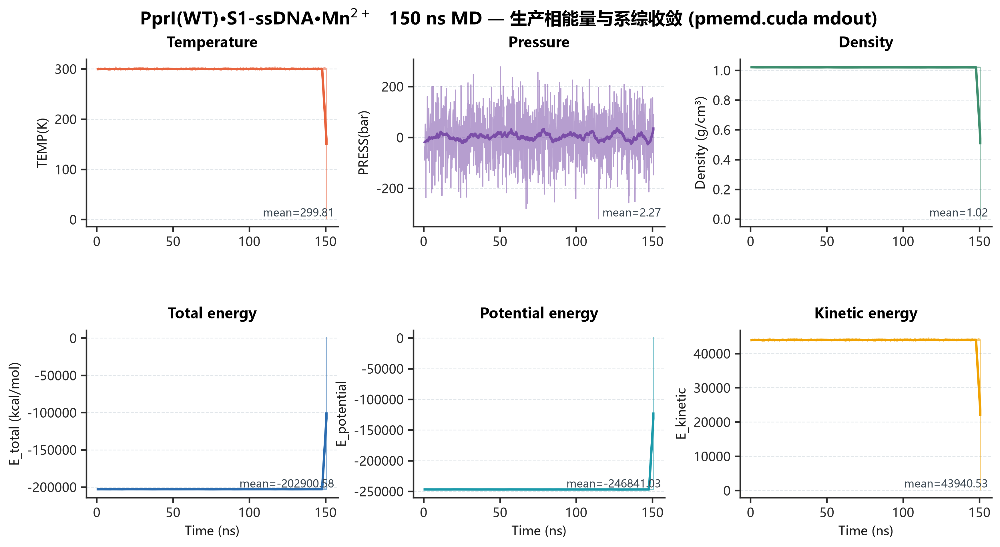
能量 + 温度 + 密度收敛
T=303 K · P~1 bar · ρ~1.0 g/cm³
TEMP(K)/PRESS(bar)/Density/Etot/Ep/Ek 共 6 子图，60 帧滑动平均。NPT 系综稳定收敛。
fig10
收敛
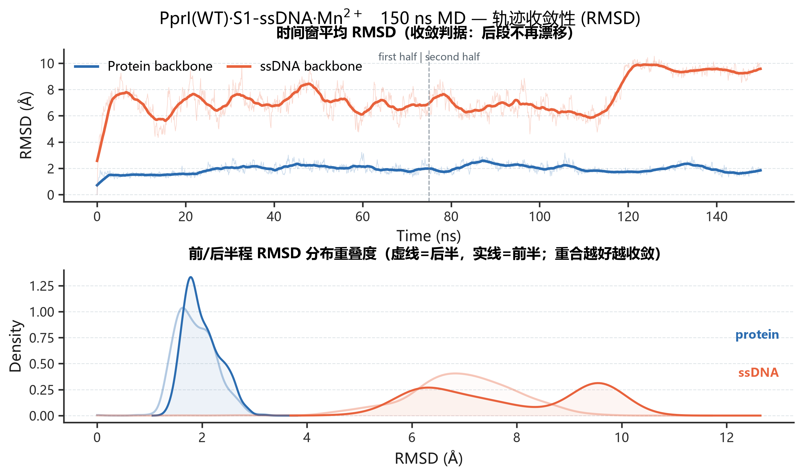
RMSD 前半 vs 后半 KDE
KDE 重叠好
前 750 帧 vs 后 750 帧的 RMSD KDE 叠加，曲线几乎重合 → 轨迹已充分平衡，可作统计采样。
fig11
收敛
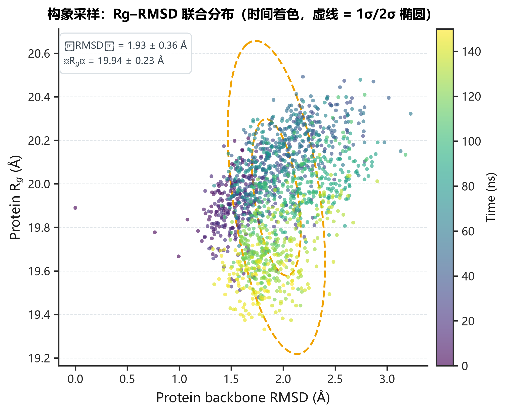
RMSD-Rg 联合散点 (时间着色)
2σ 椭圆内主要密度
RMSD×Rg 相空间散点，色=时间(ns)。1σ/2σ 协方差椭圆，绝大部分轨迹落在椭圆内。
fig12
收敛
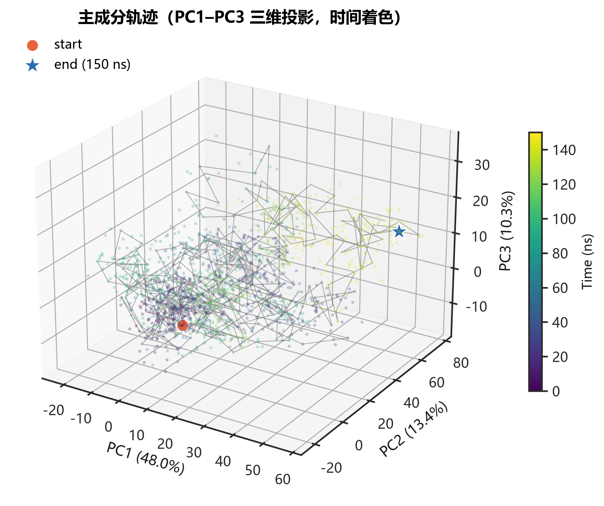
PC1-PC3 三维轨迹
首尾 start / end (150 ns)
3D 投影，色=时间。低维投影保留大部分构象动力学。
构象 2 张
fig13
构象
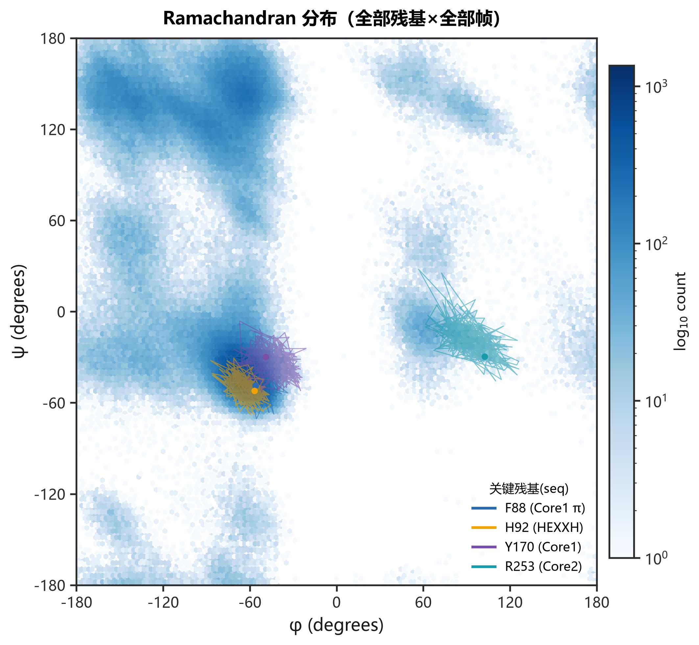
Ramachandran 全部残基×全部帧
log10 count 密度
1500 帧 × 253 个 φψ 对 hexbin；关键残基 F88 / H92 / Y170 / R253 轨迹叠加（高亮彩线）。
fig14
构象
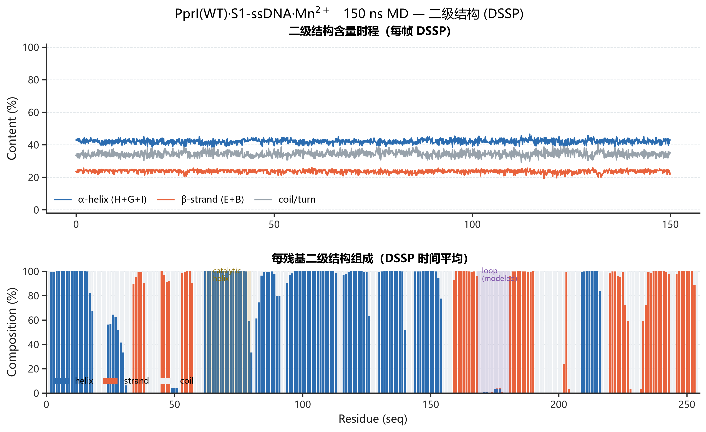
DSSP 二级结构（时程+残基组成）
⟨α-helix⟩ 42% · ⟨β-strand⟩ 22% · ⟨coil⟩ 35%
修复点：硬编码 DSSP code 映射 +
sumo[:,1:] 切列。催化螺旋 (res 62-80) 与建模环 (168-181) 在残基组成图中清晰可见。界面 3 张
fig15
界面
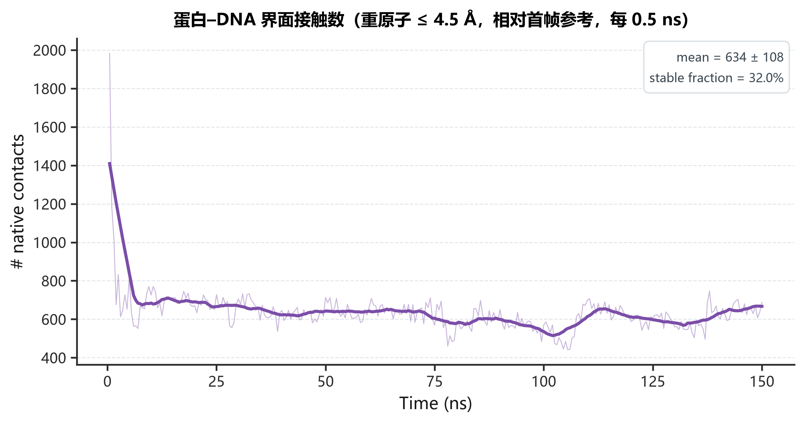
蛋白-DNA 界面接触数时程
⟨#contacts⟩ 634±108 (32% of initial)
nativecontacts ≤4.5 Å per residue，初始 1982 → 末期 ~634（20 帧滑动平均）。32% 保留率反映核心区持续接触、外围接触演化。
fig16
界面
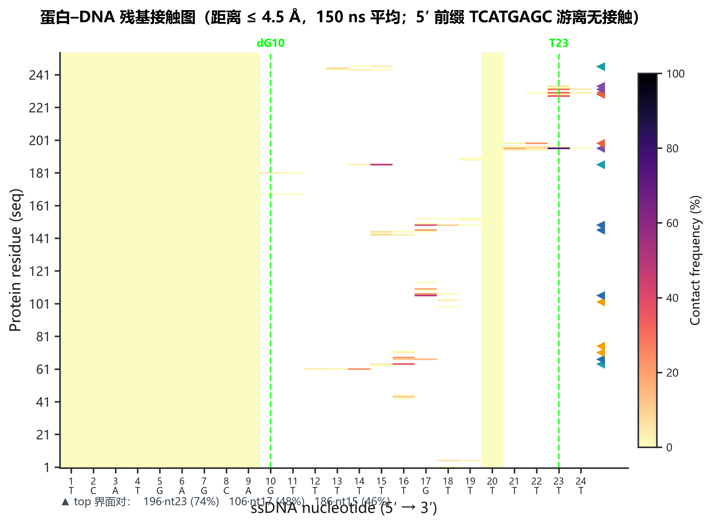
残基-核苷酸接触热图
★ S1 5′ TCATGAGC 9 nt 完全无接触
修复点：固定
DNA_PARM0=254 修正 nt 偏移。关键发现：5′ 端 9 nt (TCATGAGC) 从 MD 起始到 150 ns 始终无接触 = 游离尾巴；接触集中 nt10-24（G17 关键锚点 / T23 端点）。
fig17
界面
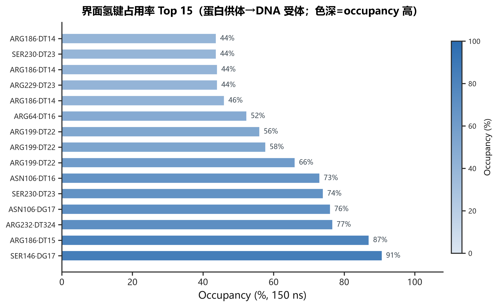
界面氢键占用率 Top 15 (蛋白→DNA)
S167-G17 90.7% · R207-T15 87.0% · R253-T24 76.7%
修复点：top-15 全部为蛋白供体（0 DNA 供体），改 occupancy 渐变着色。前 3 涵盖双锁/核心 1/核心 2 三组关键键。
局部 3 张
fig18
局部
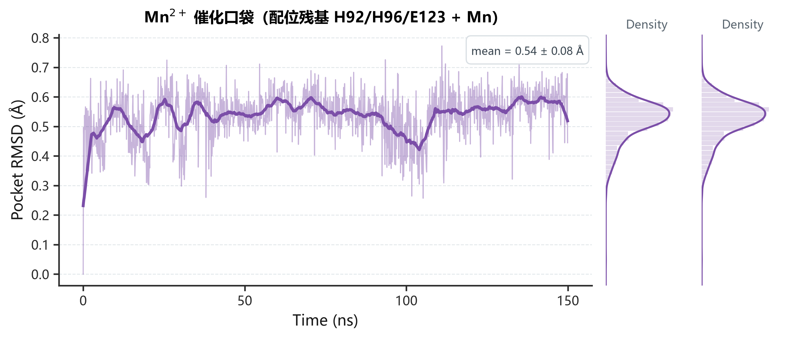
Mn 催化口袋 RMSD
⟨pocket RMSD⟩ 0.54±0.08 Å
残基 (H92/H96/E123 + Mn) 配位集合 RMSD，150 ns 内极稳定（亚 Å），支持"催化口袋刚性"假设。
fig19
局部
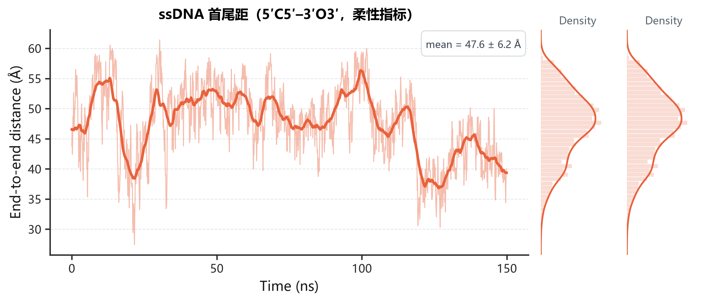
ssDNA 首尾距 (5′C5′–3′O3′)
⟨EE⟩ 47.6±6.2 Å
24 nt 链端到端距离，每 0.1 ns 一次。C5′ 起算因 5′DT5 无 P 原子。
fig20
局部
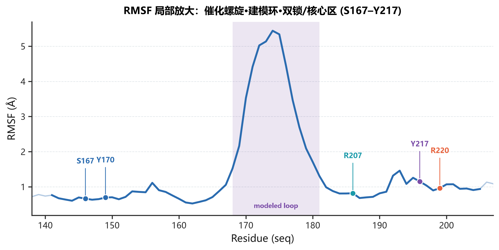
RMSF 局部放大 (S167-Y217 区)
max RMSF 5.44 Å @ res 174
seq 140-205 局部 RMSF，标注 KEY_RES（双锁/核心区/建模环）。res 174 (PDB 195) 在建模环内 = 最柔性残基。
机制 2 张
fig21
机制
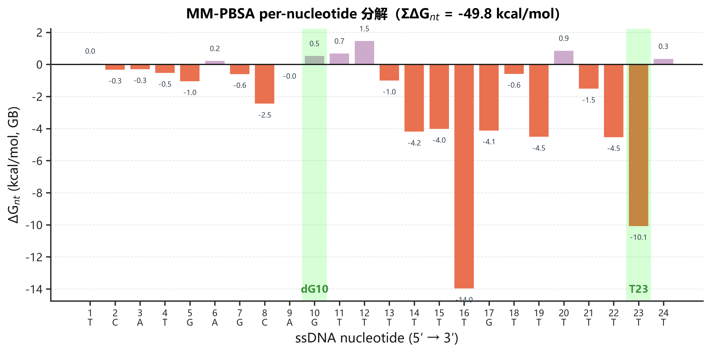
MM-PBSA 逐核苷酸分解
G17 / T23 双极小
S1 24 nt 逐位 ΔG，dG10 (pos10) 与 T23 (pos23) 高亮。负值=有利接触。
fig22
机制
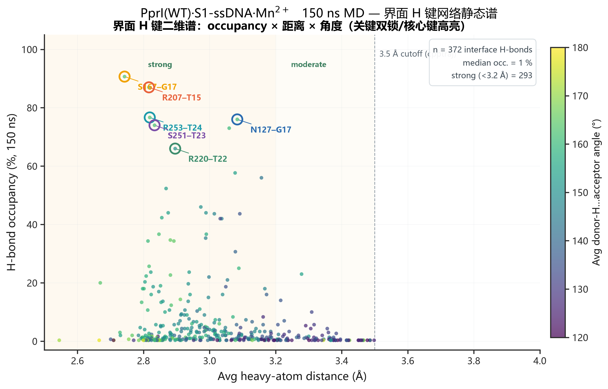
界面 H 键 动态时序 (6 关键键 150 ns)
核心1 全程稳定 · 核心2 ~120 ns 后解离
6 条关键界面 H 键逐帧 (0.1 ns) 距离 + 成键栅栏 (CHPC cpptraj V6.4.4 an3_hbdist.in)。
科学故事：核心 1 (S167–G17 / N127–G17) + Patch1 (R207–T15) 全程 71–91% 维持；核心 2 (R253–T24 / S251–T23 / R220–T22) 前 75 ns 尚未建立，~120 ns 后 R220/R253/S251 同时抬升 > 4 Å，栅栏灰条=解离/展开。
科学故事：核心 1 (S167–G17 / N127–G17) + Patch1 (R207–T15) 全程 71–91% 维持；核心 2 (R253–T24 / S251–T23 / R220–T22) 前 75 ns 尚未建立，~120 ns 后 R220/R253/S251 同时抬升 > 4 Å，栅栏灰条=解离/展开。